Algumas configurações de switches
UTFPR - Universidade Tecnológica Federal do Paraná, campus Campo Mourão
Autor: Prof. Dr. Luiz Arthur Feitosa dos Santos
E-mail: luizsantos@utfpr.edu.br
Em alguns casos é necessário realizar algumas configurações mais específicas nos switches, tais como configuração de velocidade da porta, ativação/desativação da porta, etc.
Então a seguir são apresentadas algumas dessas configurações em switches CISCO.
Velocidade e duplex
Atualmente é comum que switches sejam full-duplex, ou seja, possuam portas que permitem enviar e receber dados simultaneamente. Todavia, os switches mais antigos eram half-duplex, ou seja, suas portas podiam enviar e receber dados, mas só uma coisa de cada vez. Em outras palavras no half-duplex ou a porta estava enviando dados ou estava recebendo, mas não os dois ao mesmo tempo. Assim, alguns switches permitem configurar suas portas como half ou full-duplex.
Na figura a seguir, há um cenário de rede, com os switches sem nenhum tipo de configuração. No Switch0 foi executado o comando show interface f0/2, que mostra que a interface rede f0/2, que possui como configuração padrão a transmissão full-duplex e velocidade de 100Mbps (ver parte marcada na figura).
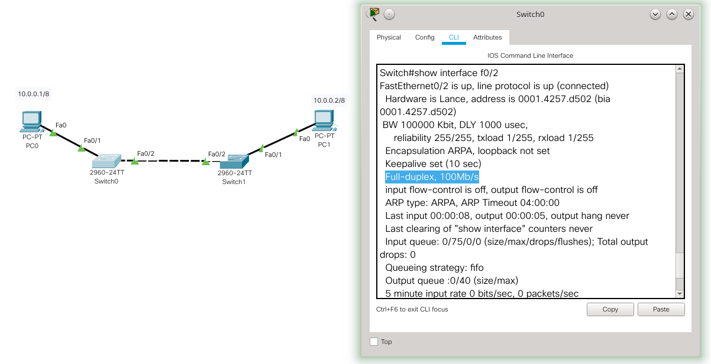
Bem, então dado o cenário anterior os comandos necessários para alterar o tipo de transmissão e a velocidade seriam:
Switch>enable
Switch#configure terminal
Enter configuration commands, one per line. End with CNTL/Z.
Switch(config)#interface f0/2
Switch(config-if)#duplex half
%LINK-3-UPDOWN: Interface FastEthernet0/2, changed state to down
%LINEPROTO-5-UPDOWN: Line protocol on Interface FastEthernet0/2, changed state to down
%LINK-5-CHANGED: Interface FastEthernet0/2, changed state to up
%LINEPROTO-5-UPDOWN: Line protocol on Interface FastEthernet0/2, changed state to up
Switch(config-if)#speed 10
Switch(config-if)#end
No exemplo anterior o Switch0 foi configurado para half-duplex com o comando duplex half e a velocidade foi alterada para 10Mbps com o comando speed 10. Tal alteração é apresentada na figura a seguir.
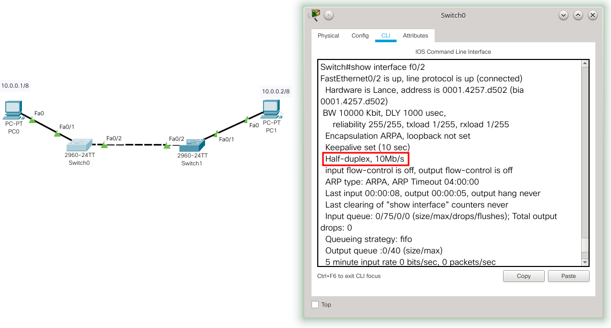
Não foi apresentado aqui, mas o ideal é que em ambos os equipamentos conectados, no caso os dois switches, tenham a mesma configuração nas interfaces que os conectam. Assim, pelo menos a interface f0/2 do Switch0 e Switch1 devem ser configurados como half-duplex e 10Mbps.
Atenção - aqui foi apresentado a ideia de redução de velocidade e troca de transmissão de full para half duplex a título de exemplo, é claro que no dia a dia a tendencia é subir a velocidade e que o tipo de transmissão seja full-duplex.
A próxima figura ilustra como mudar a velocidade para 100Mbps e o tipo de transmissão para full-duplex:
Switch#configure terminal
Enter configuration commands, one per line. End with CNTL/Z.
Switch(config)#interface f0/2
Switch(config-if)#duplex full
%LINK-3-UPDOWN: Interface FastEthernet0/2, changed state to down
%LINEPROTO-5-UPDOWN: Line protocol on Interface FastEthernet0/2, changed state to down
Switch(config-if)#speed 100
Switch(config-if)#end
Como é possível ver na figura anterior basicamente é trocar de half para full no comando duplex e de 10 para 100 no comando speed.
Atenção - Não adianta tentar colocar uma velocidade que a porta do switch não suporta. Por exemplo, trocando de 100Mbps para 1000Mbps (1Gbps) se a porta não é gigabit.
Colocando velocidade, duplex e MDIX automática
Anteriormente foi comentado como configurar a velocidade manualmente, todavia é possível configurar para que a velocidade seja negociada automaticamente pelos hosts/switches.
Também é possível configurar o auto-MDIX (automatic medium-dependent interface crossover), que faz o cruzamento do cabo de forma automática, caso seja necessário. Ou seja, se for necessário um cabo crossover e o usuário utilizar um cabo comum (straight-through) a porta do host irá fazer o ajuste automático (cruzamento dos pares do cabo), para que a conexão seja possível. Em outras palavras é possível utilizar o cabo errado e a rede funciona.
A seguir são apresentados os comandos necessários para que funcione o MDIX, bem como a configuração automática da velocidade e tipo de transmissão:
Switch>enable
Switch#configure terminal
Enter configuration commands, one per line. End with CNTL/Z.
Switch(config)#interface f0/2
Switch(config-if)#duplex auto
%LINK-5-CHANGED: Interface FastEthernet0/2, changed state to up
%LINEPROTO-5-UPDOWN: Line protocol on Interface FastEthernet0/2, changed state to up
Switch(config-if)#speed auto
Switch(config-if)#mdix auto
Switch(config-if)#end
Assim, para configurar o auto-MDIX é necessário o comando mdix auto. Já para a configuração automática do tipo de transmissão e da velocidade basta utilizar auto tanto para o comando duplex quanto para o comando speed.
Desabilitando/habilitando portas
É comum imaginar que todas as portas dos switches devam estar ligadas (prontas para uso). Todavia, por questões de segurança pode ser interessante desabilitar portas de switches que não serão utilizadas. Isso é feito com o comando shutdown.
Usando a rede dos exemplos anteriores, imagine um cenário no qual ninguém deve utilizar, por motivos de segurança, nenhuma porta que não a f0/1 e f0/2, tanto do Switch0 quanto do Switch1. Ou seja, nesta rede só é permitida a conexão entra switches, PC0 e PC1. Para desabilitar as outras portas é necessário executar em cada porta os seguintes comandos:
Switch#configure terminal
Enter configuration commands, one per line. End with CNTL/Z.
Switch(config)#interface f0/3
Switch(config-if)#shutdown
%LINK-5-CHANGED: Interface FastEthernet0/3, changed state to administratively down
Switch(config-if)#
Dado o comando shutdown da figura anterior, é possível utilizar o comando show interface status, para verificar se a porta está desabilitada (disabled), tal como ilustra a figura a seguir:
Switch#show interface status
Port Name Status Vlan Duplex Speed Type
Fa0/1 connected 1 auto auto 10/100BaseTX
Fa0/2 connected 1 auto auto 10/100BaseTX
Fa0/3 disabled 1 auto auto 10/100BaseTX
Fa0/4 notconnect 1 auto auto 10/100BaseTX
Fa0/5 notconnect 1 auto auto 10/100BaseTX
Fa0/6 notconnect 1 auto auto 10/100BaseTX
Fa0/7 notconnect 1 auto auto 10/100BaseTX
Bem, para atingir o máximo de segurança é interessante desabilitar todas as portas que não foram planejadas para serem utilizadas. Todavia, fazer shutdown porta por porta irá ocupar muito tempo e pode gerar erros de configuração. Então uma opção interessante é passar uma faixa de portas de uma só vez, isso é possível utilizando o comando a seguir:
Switch#configure terminal
Enter configuration commands, one per line. End with CNTL/Z.
Switch(config)#interface range fastethernet 0/3 - 7
Switch(config-if-range)#shutdown
%LINK-5-CHANGED: Interface FastEthernet0/4, changed state to administratively down
%LINK-5-CHANGED: Interface FastEthernet0/5, changed state to administratively down
%LINK-5-CHANGED: Interface FastEthernet0/6, changed state to administratively down
%LINK-5-CHANGED: Interface FastEthernet0/7, changed state to administratively down
Switch(config-if-range)#
O comando interface range fastethernet 0/1 - 7 habilita a configuração para uma faixa de portas do switch. Desta forma, é só digitar uma vez o comando que ese será replicado para todas as portas. No exemplo foi utilizado o comando shutdown, mas pode ser qualquer outro (não só para habilitar e desabilitar portas). A seguir é apresentado o status de cada porta, também foi colocado um host novo, simulando uma pessoa não autorizada tentando acessar a rede, Na figura dá para ver que o link para esse novo PC (PC2) está em vermelho, ou seja, esse computador não está na rede, pois ele está em uma porta desabilitada.
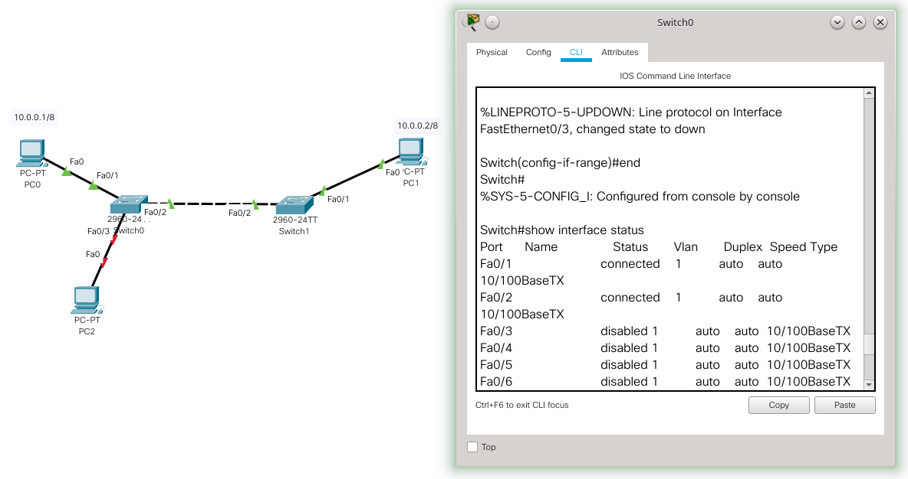
É claro que um invasor poderia remover o cabo de uma porta que funciona e tentar acessar a rede, mas isso pode gerar um alerta na rede já que essa pode parar de funcionar corretamente (algum PC pode parar ou a comunicação entre o switch.
A proteção apenas pela porta não funciona em 100% dos casos, pois o invasor pode tentar achar uma porta habilitada ou remover um PC idôneo para conectar o seu. Entretanto, o ato de desabilitar portas já é uma medida de segurança interessante para bloquear pessoas leigas (não hackers) que tentam usar a rede sem permissão.
Limitando fluxos DHCP
O DHCP é um serviço de rede que permite configurar automaticamente os endereços de hosts na rede, para que esses consigam acessar a rede sem precisar de configuração manual.
Todavia, o DHCP dá brechas para ataques, como por exemplo:
- Quando um atacante se passa por um servidor DHCP legítimo para fazer com que o cliente passe pela máquina do atacante (e assim roube dados) ou acesse um servidor DNS comprometido.
- Ou o atacante envia dados errados, tais como gateway padrão e servidor DNS, de forma que os clientes não consigam mais acessar a rede, o que gera instabilidade ou indisponibilidade na rede.
- Além dos ataques propositais, causados por hacker, também existe a possibilidade de alguém ligar erroneamente um roteador ou AP com um servidor DHCP ativo e causar da mesma forma indisponibilidades na rede.
Assim, alguns switches permitem determinar em qual porta está o servidor DHCP, desta forma, qualquer tráfego que venha de outra porta será ignorado/bloqueado, ajudando a evitar problemas com servidores DHCP mal configurados ou maliciosos.
Lembrando que o cliente obtém as configurações de rede do primeiro servidor DHCP que responder, não importa qual seja esse servidor.
Em switches Catalyst da CISCO essa funcionalidade é chamada de DHCP Snooping que permite configurar quais portas do switch são confiáveis (trust) ou não para enviar pacotes do servidor DHCP. Portas não confiáveis (untrust) podem enviar requisições DHCP e as portas confiáveis podem enviar respostas dos servidores DHCP.
A figura a seguir traz um exemplo, no qual há uma rede com um PC0 e um servidor (Server0) simulando um hacker com um servidor DHCP malicioso, tal servidor passa erradamente para o PC0 faixas de IPs de 10.0.0.100 até 10.0.0.110. Na esquerda da figura é apresentado que o PC0 (vítima) obteve o seu IP a partir do servidor DHCP do hacker, obtendo o IP 10.0.0.100.
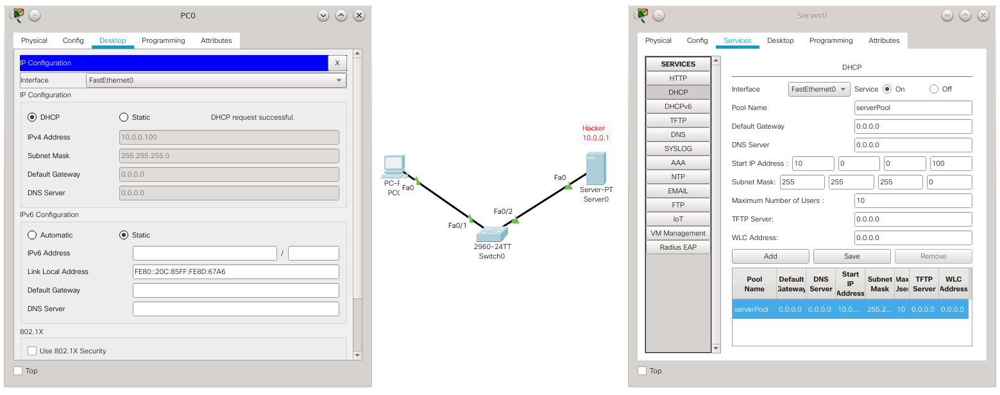
Em um cenário real haveria mais clientes e provavelmente já existiria na rede o servidor DHCP legítimo. Todavia para facilitar o exemplo, esta rede inicialmente só tem um servidor e um cliente.
A próxima imagem apresenta a rede já com um servidor legítimo além do servidor do hacker. O cliente pediu novamente para obter um IP na rede, mas quem respondeu primeiro foi o servidor do hacker, e dá para ver que o IP do PC0 agora é o 10.0.0.101, o que mostra que ele pegou um novo IP do hacker. Então o cliente não conseguiu pegar a faixa de IPs 172.16.0.200-250 que está configurado no servidor legítimo.
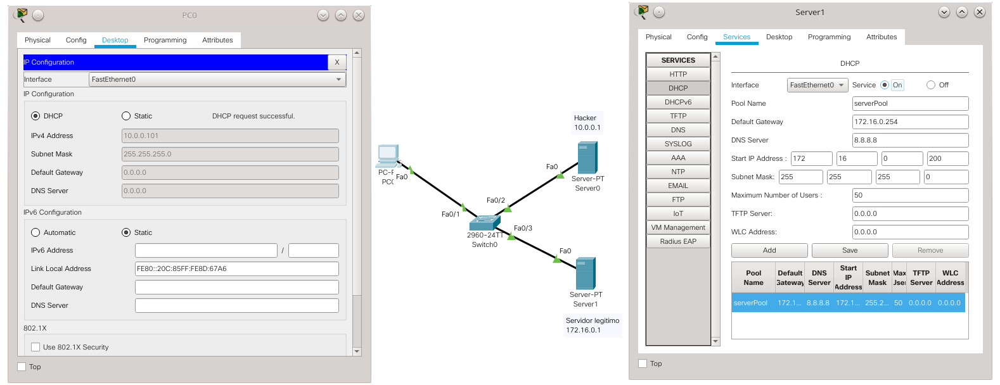
Agora vamos aplicar os comandos para permitir que respostas de DHCP sejam enviadas apenas pela porta do switch, na qual está conectada o servidor DHCP legítimo (no caso porta Fa0/3). É possível realizar isso utilizando os comandos a seguir:
Switch>enable
Switch#configure terminal
Enter configuration commands, one per line. End with CNTL/Z.
Switch(config)#ip dhcp snooping
Switch(config)#int fa0/3
Switch(config-if)#ip dhcp snooping trust
Switch(config-if)#
Os comandos anteriores basicamente habilitam o DHCP Snooping (ip dhcp snooping) e depois configura a porta Fa0/3 como uma porta confiável (ip dhcp snooping trust). Depois disso o único servidor DHCP que pode responder nesta rede é Server 1 (que é o servidor legítimo), qualquer outro servidor DHCP conectado em outra porta não conseguirá agir na rede.
A figura a seguir mostra o cliente fazendo uma requisição de IP via DHCP e agora quem responde é o servidor legítimo, já que o hacker está bloqueado na rede.
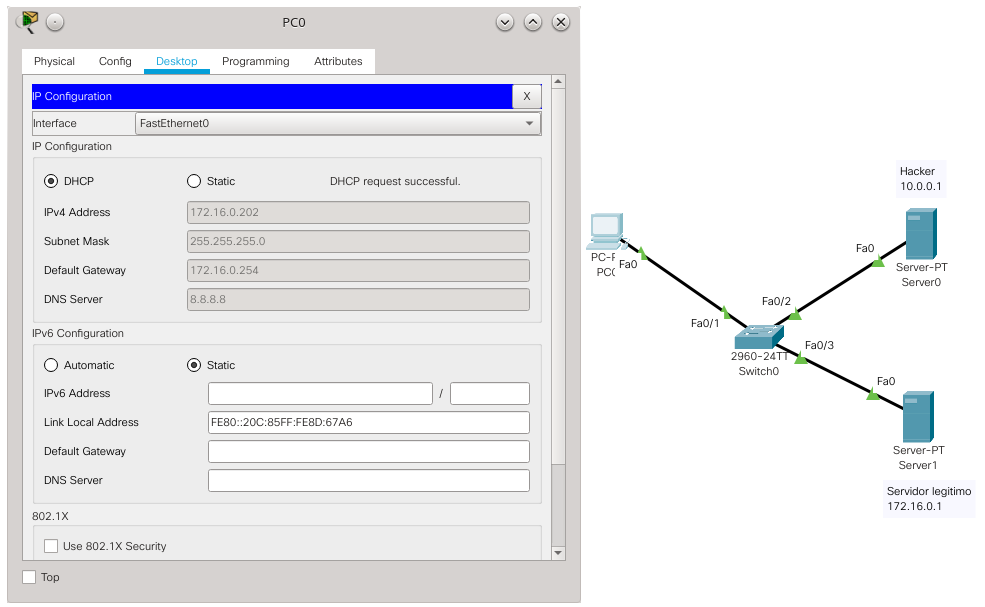
Como pode ser visto agora o PC0 pegou o IP 172.16.0.202, que vem do Server1, ou seja, o IP não vem mais do hacker e sim do servidor legítimo.
Limitando os pedidos do cliente DHCP
Ainda quanto a configuração do switch, também seria possível regular a quantidade de pedidos que um cliente pode fazer para servidores DHCP, o que pode evitar ataques DoS. Para fazer isso é necessário executar em cada porta do switch o seguinte comando: ip dhcp snooping limit rate 5, neste caso só são aceitos pacotes DHCP a cada 5 segundos. É claro que é possível alterar esse valor de tempo.
Note que esta segurança é válida, mas possui brechas. Por exemplo, se o hacker tiver acesso ao switch ele pode facilmente inverter as portas do servidor DHCP legítimo com o servidor malicioso. Então, é importante manter a segurança física dos switches.
Limitando o uso das portas dos switches por MAC
Alguns switches possuem formas de limitar o acesso às portas através de listas de MACs (endereço físico dos hosts) e/ou quantidade de clientes por portas. Isso ajuda a evitar hosts não autorizados na rede e problemas de indisponibilidade/instabilidades na rede.
No caso de switches CISCO, é possível utilizar a técnica de Port Security, que limita o número de MACs válidos por porta dos switches, desta forma hosts legítimos são permitidos na rede, enquanto hosts desconhecidos não são.
Existem as seguintes maneiras/técnicas para configurar/controlar o Port Security:
-
Lista de MACs estáticos: nesta a lista de acesso (MAC por porta) é feita de forma estática.
-
Lista de MACs dinâmicos: nesta os endereços MAC são identificados e armazenados dinamicamente pelo switch, todavia tais endereços são perdidos/apagados quando o switch é reiniciado ou mesmo se apenas a porta for reiniciada (o processo de tirar o cabo e recolocá-lo, já pode reiniciar a porta).
-
Lista de MACs sticky: a mesma que a anterior, mas os endereços podem ser mantidos pelo switch mesmo se a porta for reiniciada ou até se o switch for reiniciado. Essa técnica é conhecida como “sticky secure MAC address”. Nesta também é possível configurar MACs de forma estática, ou seja, é possível combinar estático, dinâmico e permanecer com a lista de MACs, mesmo se o switch for desligado.
Dentre essas maneiras: (i) o estático é o mais seguro, mas pode ser muito complexo manter essa em uma rede que muda constantemente; (ii) o dinâmico é o mais brando, não exigindo muito do administrador da rede, mas é mais para controle de número de hosts e desta forma não é tão seguro; (iii) o MAC sticky é um método intermediário, pois não é necessário o cadastro manual dos MACs, pois a rede “aprende” quais são os MACs que estão em cada porta, é claro que a segurança deste método depende de algum esforço do administrador da rede.
Em todas as configurações é possível determinar a quantidade de MACs por portas, isso ajuda a delimitar, por exemplo, se uma porta só deve ter um host, ou se é possível conectar um switch com mais hosts. A configuração padrão só permite um MAC por porta.
Outra configuração importante é a ação a ser tomada caso o switch perceba que a quantidade de MACs ou que o MAC de um host foi alterada/violada. No caso há três ações possíveis:
-
shutdown: é a ação padrão, nesta quando há violações (ex. limite de hosts atingido ou MAC não identificado) a porta é bloqueada e não será mais possível utilizá-la a menos que o administrador execute os comandos
shutdowneno shutdown, para reativar a porta. -
protect: nesta quando há violações os pacotes referentes a está violação, são descartados e o administrador não é notificado.
-
restrict: a mesma que a anterior, mas o administrador é notificado via SNMP, syslog e o contador é incrementado.
Cada ação tem suas vantagens e desvantagens. O shutdown é o mais seguro, mas exigirá mais do administrador da rede. O protect não incomodará o administrador, todavia pode ser menos seguro. Por fim, o restrict também não exige ação imediata do administrador, todavia exige que ele tenha uma rotina de verificação de registros (logs), para verificar se há problemas na rede.
Atenção - Perceba que Port Security, principalmente com listas estáticas e sticky, vai trazer mais segurança para a rede, todavia deixará a rede menos flexível no sentido de aceitar automaticamente novos hosts. Desta forma, se a rede for muito dinâmica (sempre há hosts novos entrando e saindo da rede) essa técnica pode não ser recomendada, mas se a rede for mais estática (os hosts não mudam constantemente - exemplo: uma rede de servidores) essa técnica irá trazer mais segurança para o ambiente de rede.
A seguir vamos configurar switches com as com listas estáticas, sticky e dinâmica.
Lista de MACs Estáticos
Neste método é necessário relacionar manualmente o endereço físico (MAC) com a porta. Para isso vamos utilizar a rede de exemplo a seguir:
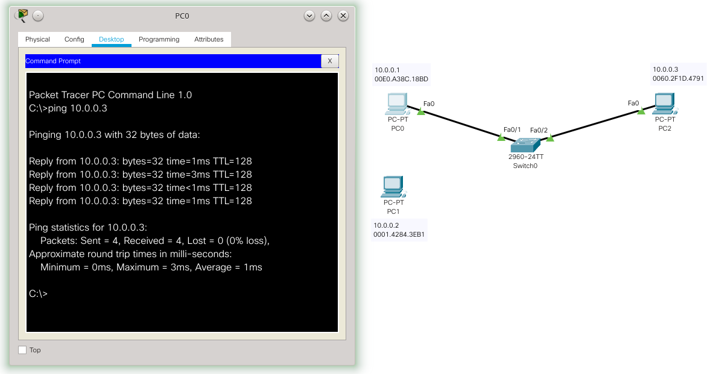
No switch foram executados os seguintes comandos:
Switch>enable
Switch#configure terminal
Enter configuration commands, one per line. End with CNTL/Z.
Switch(config)#interface f0/1
Switch(config-if)#switchport mode access
Switch(config-if)#switchport port-security
Switch(config-if)#switchport port-security mac-address 00E0.A38C.18BD
Switch(config-if)#
%SYS-5-CONFIG_I: Configured from console by console
Depois de entrar no modo administrador para a configuração do switch, foi escolhida a interface a ser configurada (no caso a Fa0/1 - interface f0/1), na sequência é necessário informar que essa é uma porta comum para conexão de hosts (switchport mode access). Então foi ativada a função Port Security (switchport port-security). Por fim, o endereço físico do PC0 foi atrelado a porta Fa0/1 (switchport port-security mac-address 00E0.A38C.18BD).
Na figura anterior (com o cenário de teste), dá para ver que o PC0 já consegue pingar o PC2. Agora caso alguém tente mudar o cabo de rede e plugar outro host a porta Fa0/1, tal porta será desligada (shutdown - que é a ação padrão), tal como mostra a próxima figura (os triângulos vermelhos indicam que a porta está desativada).
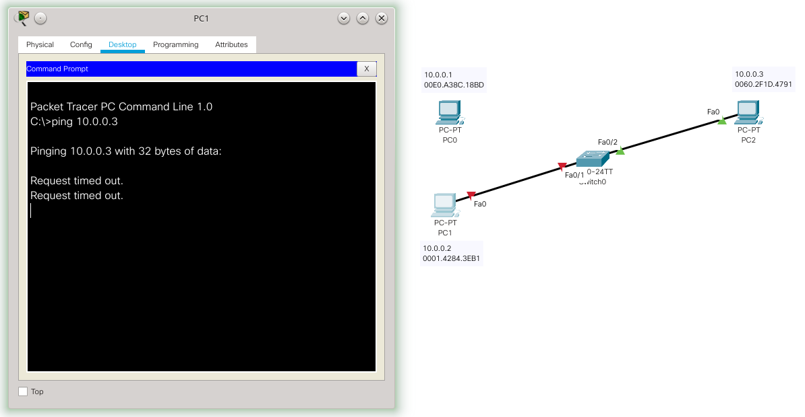
Neste caso, para restabelecer a atividade normal da porta é necessário:
- Voltar o cabo para o PC0;
- Executar em ordem os comandos
shutdowneno shutdown, tal como é apresentado a seguir:
Switch>enable
Switch#configure terminal
Enter configuration commands, one per line. End with CNTL/Z.
Switch(config)#int f0/1
Switch(config-if)#shutdown
%LINK-5-CHANGED: Interface FastEthernet0/1, changed state to administratively down
Switch(config-if)#no shutdown
%LINK-5-CHANGED: Interface FastEthernet0/1, changed state to up
%LINEPROTO-5-UPDOWN: Line protocol on Interface FastEthernet0/1, changed state to up
Switch(config-if)#
Após isso a porta volta a funcionar normalmente. Lembrando que este é o método mais seguro, todavia é o que mais vai exigir do administrador, pois ele terá que cadastrar todos os hosts.
Lista de MACs sticky
Este método é similar ao estático, só que não é necessário cadastrar os endereços físicos (MACs). Pois, assim que a porta do switch for configurada com esse método, o primeiro host que acessar a porta (ou uma quantidade pré configurada de hosts) será relacionado automaticamente com essa porta e essa relação pode ficar até o switch ser reiniciado (não a porta). Se o administrador salvar essa lista na configuração de boot do switch, essa relação fica válida mesmo se o switch for reiniciado.
Para ilustrar esse método vamos utilizar a mesma rede do exemplo anterior, só vamos pegar uma porta diferente, no caso a porta Fa0/3. A configuração feita no switch agora é:
Switch(config)#interface f0/3
Switch(config-if)#switchport mode access
Switch(config-if)#switchport port-security
Switch(config-if)#switchport port-security mac-address sticky
Os três primeiros comandos são iguais ao exemplo anterior, a diferença é o último comando que configura o Port Security da Fa/03 para usar mac-address por sticky, ou seja, o primeiro endereço que passar por esta porta vai ficar grudado nela. ;-)
A figura a seguir mostra o cenário e o status do Port Security para a porta Fa0/3, o principal a se notar é que ainda não há endereço MAC atrelado a porta (Last Source Address:Vlan : 0000.0000.0000:0). É possível ver isso utilizando o comando show port-security int f0/3.
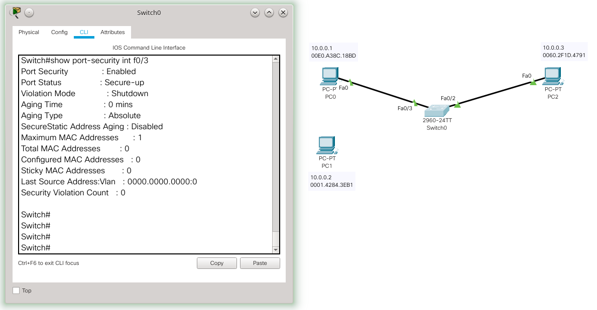
Na sequência foi realizado um ping do PC0 para o PC3 (ping 10.0.0.3), ou seja, o switch vai “aprender” que o host conectado a porta Fa0/3 é o PC0. Então, pela regra do sticky, o endereço físico do PC0 vai ficar atrelado a esta porta, até o switch ser reinicializado. Isso pode ser visto na figura a seguir.
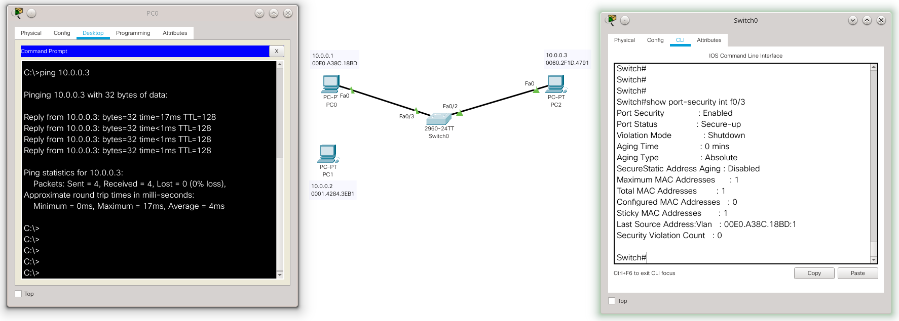
Desta forma, agora a porta Fa0/3 do switch está relacionada com o MAC 00E0.A38C.18BD do PC0 (Last Source Address:Vlan : 00E0.A38C.18BD:1). Para testar a eficácia do método vamos trocar o cabo do PC0 para o PC1. Tal resultado é apresentado na figura a seguir.
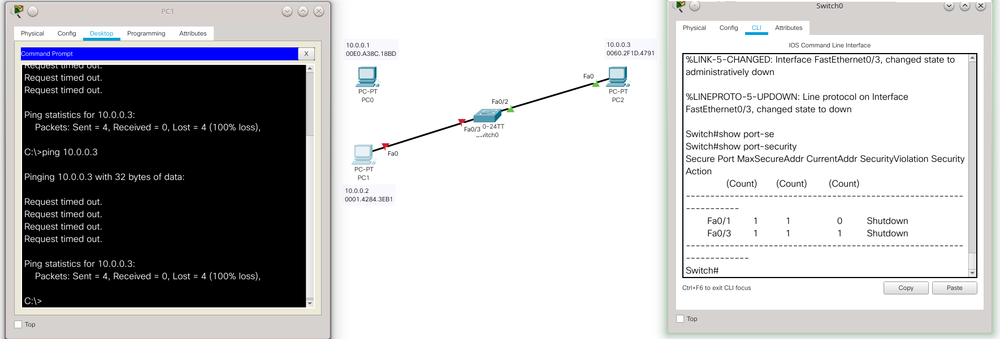
A figura anterior mostra que o link entre o PC1 e PC2 foi bloqueado, pois violou a relação criada pelo sticky. Para a porta voltar ao normal é necessário religar o cabo com o PC0 e desligar/ligar a interface Fa0/3. O comando show port-security mostra o status das portas no método Port Security.
Imaginando que o PC0 não vá ou não deva mudar de porta neste cenário de rede. Agora o administrador pode utilizar o comando copy running-config startup-config, para salvar no switch a relação entre host e porta descoberta pelo sticky. Então, mesmo que o switch seja reiniciado esta ligação permanecerá (não é necessário reaprender quem está lá).
Caso o administrador não queira salvar a lista de MACs, mas queira salvar somente a configuração do sticky, ele deve fazer isso antes de colocar o switch em produção. Ou seja, faz as configurações sticky, então salva com o comando
copye somente depois deixa os hosts utilizarem as portas.
Lista MAC dinâmica
Neste método, tal como o anterior, a lista de MACs é preenchida automaticamente pelo switch, todavia o switch não vai lembrar desta lista quando for reiniciado.
É importante notar que tais endereços serão desvinculados/esquecidos se a própria porta for reiniciada (não só o switch inteiro) e isso acontece, por exemplo, quando você remove o cabo da porta e o conecta novamente. Isso significa que o cenário apresentado no exemplo anterior não é possível com esse método, pois o ato de tirar o cabo do PC0 e plugar no PC1 fará com que o switch esqueça que o PC0 era o host conectado à porta e quando o PC1 for conectado, tal PC1 passará a ser o novo PC atrelado aquela porta, sem nenhum tipo de violação. Então, neste caso, o presente método será mais útil para controlar se em uma porta foi conectada em outro switch e a quantidade de hosts conectados à este novo switch.
Dado o que foi descrito anteriormente vamos mudar o cenário de rede do exemplo da seguintes maneira: (i) utilizando a porta Fa0/4 para a configuração dinâmica; (ii) e principalmente conectando a porta Fa0/4 um outro switch, que por sua vez está conectado aos dois hosts. A figura a seguir mostra esse novo cenário.
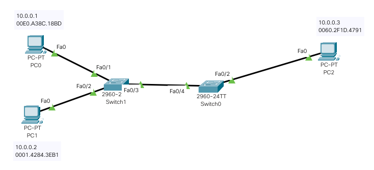
O novo switch (Switch1) não possui configurações extras, ele está representando um switch ou AP, que foi plugado na rede de forma não autorizada.
Bem, neste novo cenário vamos configurar a porta Fa0/4 do Switch0 de forma que ela permita que apenas um dos hosts conectados à porta acesse a rede. Note que o próprio Switch1 pode ser o primeiro a se comunicar com a porta, então nem o PC0 nem o PC1 conseguirá acessar a rede. Então, para o exemplo funcionar, deixando pelo menos um dos PCs acessar a rede, vamos configurar o switch para permitir dois hosts na porta - provavelmente será o Switch1 e um dos PCs. Os comandos necessários para isso são:
Switch>enable
Switch#configure terminal
Enter configuration commands, one per line. End with CNTL/Z.
Switch(config)#interface f0/4
Switch(config-if)#switchport mode access
Switch(config-if)#switchport port-security
Switch(config-if)#switchport port-security maximum 2
Switch(config-if)#switchport port-security violation restrict
Switch(config-if)#
Em ordem os comandos executados fazem:
-
enable,configure terminaleinterface f0/4: dão acesso a configuração como administrador à port Fa0/4. -
switchport mode access: informa que é uma porta comum, que espera conectar hosts. -
switchport port-security: habilita o Port Security e como nada mais foi informado o padrão é o método dinâmico que estamos usando neste exemplo. -
switchport port-security maximum 2: configura a porta para aceitar até dois hosts. Essa configuração é opcional e caso não seja feita o padrão é aceitar apenas um host por porta. -
switchport port-security violation restrict: altera a ação a ser tomada, caso a porta seja violada. Alterar a ação da violação também é uma configuração opcional. Lembrando que o padrão é shutdown, mas com esse comando a ação foi alterada para restrict, ou seja, bloqueia os pacotes da violação e envia mensagens para o administrador.
Atenção - as opções maximum e violation, também podem ser utilizadas nos métodos estático e por sticky.
Agora com a presente configuração da porta Fa0/4, só vai ter acesso à rede os dois primeiros hosts que acessarem a rede, o terceiro ficará de fora.
No método dinâmico envolve uma questão de “sorte”, para quem vai ganhar o acesso à rede. O primeiro host que tentar acessar a porta e conseguir será o “sortudo”.
Na figura a seguir é apresentada a tentativa do PC0 e PC1 acessar a rede. No caso o PC0 foi mais rápido que o PC1 e conseguiu acessa a rede, então o PC1 foi bloqueado. É muito importante lembrar que o Switch1 também conta como um host, e por isso os dois hosts que podem acessar a rede são Switch1 e PC0, já o PC1 terá seus pacotes barrados.
Atenção - Em alguns casos pode não ser necessário contar um dos dispositivos a mais, como foi este caso do Switch1. Por exemplo, isso provavelmente não seria necessário caso estivéssemos utilizando um hub.
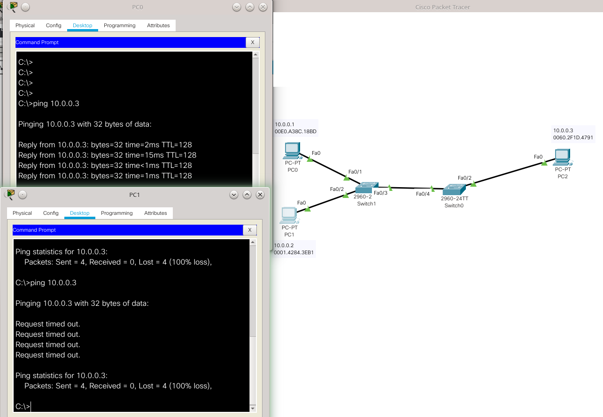
Voltando a questão da alteração da ação de shutdown (padrão) para restrict. Neste cenário foi realizada essa alteração, pois com o shutdown o administrador vai ter que reabilitar a porta toda vez que o host “azarado” tentar acessar a rede e isso pode tomar muito o tempo do administrador. Assim, para este caso optou-se por simplesmente descartar os pacotes do computador “azarado”, sem incomodar o administrador. Essa é uma boa alternativa para redes dinâmicas, nais quais não se tem muito controle sobre quem vai tentar acessar a rede.
Por fim, a técnica Port Security é uma opção de proteção para as redes que utilizam switches CISCO. Todavia, sua implementação deve ser bem pensada e planejada. Caso contrário essa técnica pode trazer bloqueios e comportamentos indesejados para a rede, similares às pragas digitais que estamos tentando evitar. É claro que se for implementada corretamente trará grandes benefícios para a rede à segurança e desempenho da rede.
Conclusão
Como foi apresentado aqui há várias opções de configurações de switches, inclusive não contemplamos todas neste texto. Assim, cada administrador deve avaliar quando e como utilizar tais opções, tentando dosar corretamente todas essas opções, para desta forma tornar as redes mais rápidas, seguras e fáceis de manter.
Referências:
- CISCO. Routing and Switching Essentials - Companion Guide. Cisco Press. ISBN-13: 978-1-58713-318-3. 2014.
- https://www.certificationkits.com/cisco-certification/ccna-articles/cisco-ccna-switching/cisco-ccna-port-security-and-configuration/
- https://www.cisco.com/c/en/us/td/docs/switches/lan/catalyst6500/ios/15-0SY/configuration/guide/15_0_sy_swcg/port_security.pdf